FK ANDIJON
ANDIJON PRESS LIVE

 31Shoyadbek Ravshanov
31Shoyadbek Ravshanov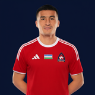
5Abdulvohid G‘ulomov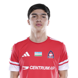
23Fazliddinxo‘ja Ubaydullayev 43Muhammadiyor Xurxonov
43Muhammadiyor Xurxonov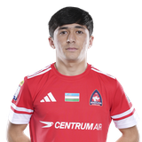
47Diyor Madaminov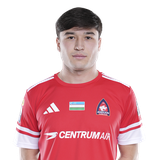
49Zulfiqor Akbarov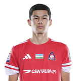
53Yahyobek Yo‘ldoshaliyev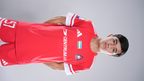
57Habibullo Habibullayev 66Abubakir Rejabboyev
66Abubakir Rejabboyev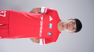
87Jamshidbek Ko‘paysinov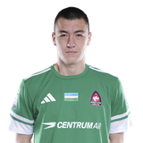
12Ilnur Zokirov 3Elbek Rozukulov
3Elbek Rozukulov 29Ahrorbek Ravshanbekov
29Ahrorbek Ravshanbekov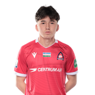
55Nuriddin Bahodirov 75Lazizbek Hasanboyev
75Lazizbek Hasanboyev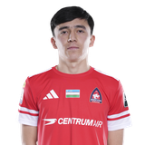
79Patidin Zuhriddinov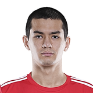
88Shohjahon Yorqinboyev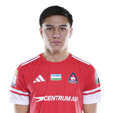
97Muhammadali AbdurashidovAndijonXorazm FK Andijon
FK Andijon XorazmAndijon U21VSXorazm U21Andijon U21Xorazm U21
XorazmAndijon U21VSXorazm U21Andijon U21Xorazm U21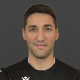
Firdavs NorsafarovBosh hakam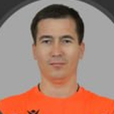
Husan XudoyberdiyevYordamchi hakam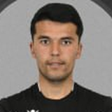
Abdurasul QayumbayevZaxira hakam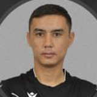
Doston RahmonovVAR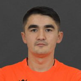
Shohnur Yo'ldoshevAVAR31Shoyadbek Ravshanov43Muhammadiyor Xurxonov66Abubakir Rejabboyev3Elbek Rozukulov29Ahrorbek Ravshanbekov75Lazizbek Hasanboyev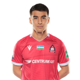
Sardor Azimov4 sariq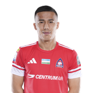
Abdurahmon Komilov2 sariq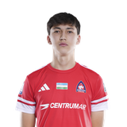
Sayfiddin Sodiqov2 sariq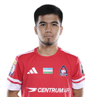
Hamidullo Karimov16 gol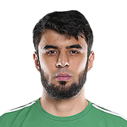
1Eldor Adhamov12 o'yin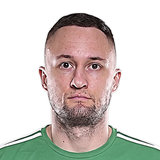
19Artyom Potapov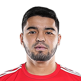
2Odil Abdumajidov13 o'yin · 2 gol · 1 uzatma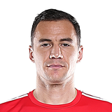
15Nemanya Chalasan17 o'yin · 1 gol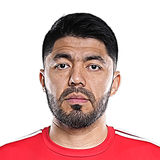
20Islom To‘xtaxo‘jayev13 o'yin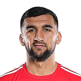
22Usmonali Ismonaliyev25 o'yin · 3 gol · 1 uzatma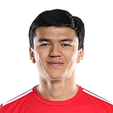
28Bekzod Sulaymonov14 o'yin · 1 gol · 1 uzatma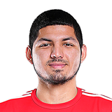
77Mahmud Mahammadjonov20 o'yin · 3 uzatma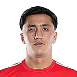
7Po‘latxo‘ja Xoldorxonov20 o'yin · 5 gol · 4 uzatma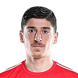
9Imeda Ashortia14 o'yin · 2 gol · 2 uzatma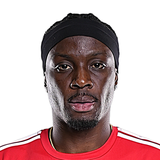
27Martin Boakye15 o'yin · 3 gol · 2 uzatma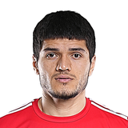
33Doniyor Abdumannopov21 o'yin · 1 gol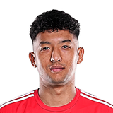
99Rustam Turdimurodov1 o'yin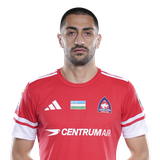
6Aleksandre Andronikashvili19 o'yin · 3 gol · 2 uzatma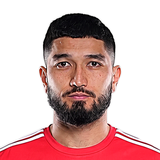
8Shoxmalik Komilov1 o'yin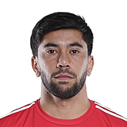
11Humoyunmirzo Iminov18 o'yin · 1 gol · 3 uzatma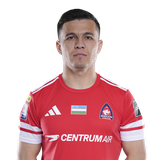
17Azizbek Turg‘unboyev16 o'yin · 3 gol · 4 uzatma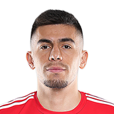
18Damir Temirov21 o'yin · 1 gol · 2 uzatma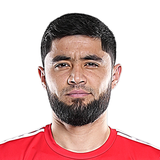
26Muhammadkarim Toirov22 o'yin · 1 gol